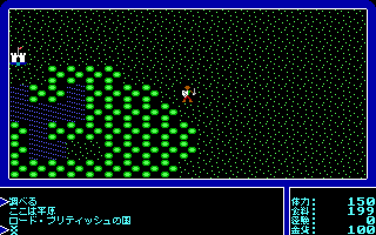
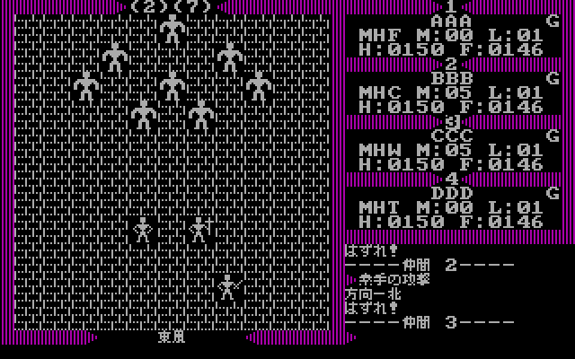
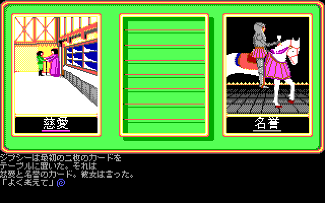
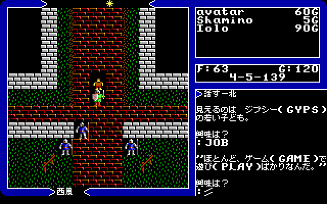
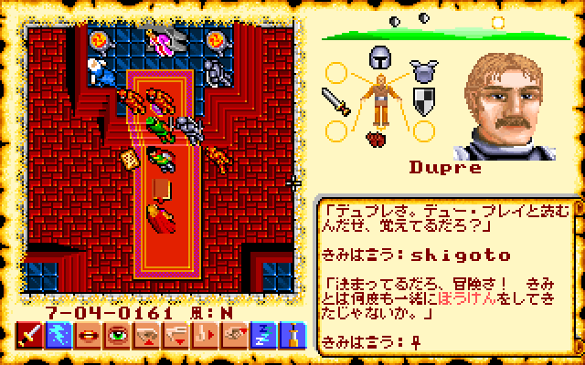
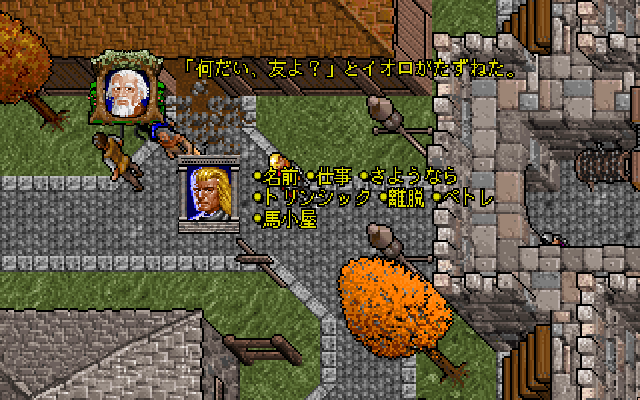
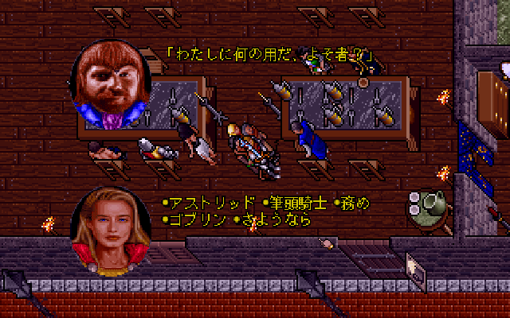
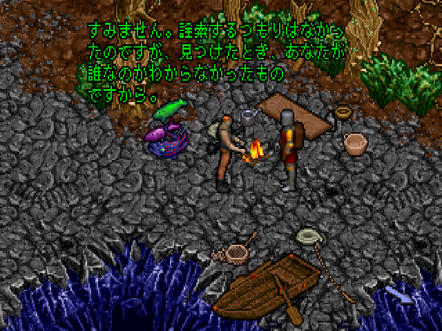
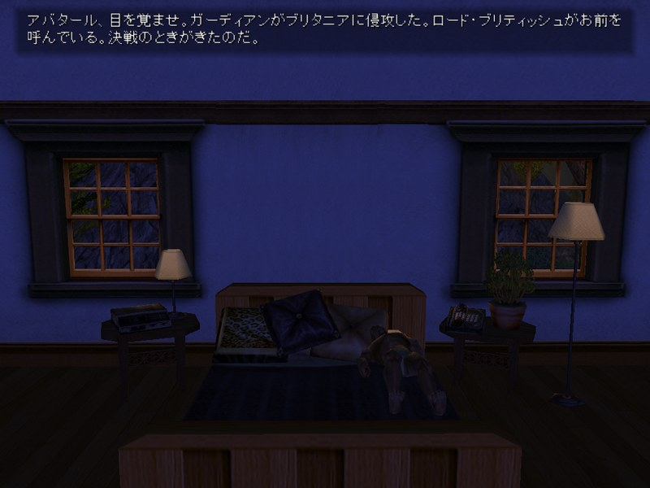

このプロジェクトについて
- 非公式のファンメイドパッチです。ゲーム本体は GOG.com などで入手してください。
- パッチはゲームのファイルを書き換えません。配布物には原作のプログラムやデータは入っていません。
- 日本語の表示には、美咲フォント（8×8 ドット）などのフリーフォントを使っています。
ご意見・誤訳の報告
誤訳や不自然な訳に気づいたら、GitHub の Issues で教えてください。
ウルティマ（Ultima）シリーズを日本語で遊べるようにする、非公式のファンメイド日本語化プロジェクトです。 GOG.com で販売されている版を対象に、I から VIII までを順に日本語化していきます。 公式の日本語版があるウルティマIX は、その入れ方を案内しています。 どのパッチも、ゲームのフォルダにファイルを置くだけで日本語になり、外せば英語に戻ります。










誤訳や不自然な訳に気づいたら、GitHub の Issues で教えてください。